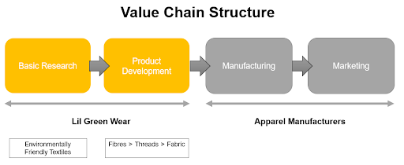
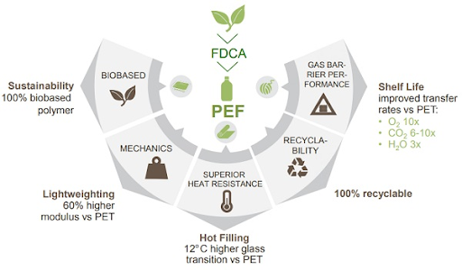

Business Strategy
Lil Green Wear will establish business locally through different stages. Focusing on a B2B model, catering to industrial partners such as uniform manufacturers by offering PEF textiles and other environmentally friendly textiles produced from our R&D efforts.
Unique Selling Proposition
Our company selected Polyethylene Furanoate (PEF) due to its superior barrier, mechanical and thermal properties. Currently in the Singapore apparel market, there is a lack of eco-friendly textiles able to integrate into current PET recycling streams and meeting cost expectations without negative impacts. We pride ourselves in providing superior quality eco-friendly textiles at affordable prices with maximal benefits for everyone. Conversion of industrial wastes into valued products within a closed lifecycle loop.
Competitor Analysis
There are currently no direct competitors of eco-friendly textiles in the apparel industry in Singapore. This may be due to the many challenges faced by green suppliers and manufacturers. Most green suppliers and manufacturers struggle to keep up with environmental commitment especially when there is high investment and low return involved in green initiatives. This could be the biggest deterrence faced by our predecessors. Green business may not be economically beneficial in the short-term. Therefore, only organisations with stronger financial capabilities are able to rise up and reap long term benefits from the collaboration. Here are common crucial barriers of entry for green textiles in Singapore
- Absence of reward system
- Lack of new technology, materials and processes
- Lack of economic benefits
- Reluctance of support by supply chain partners
Competitive Advantages
Our company will position our products on a ‘More for More’ basis. We will provide superior quality textiles from a technology, using current horticulture wastes in Singapore. Concurrently, we will work towards being self-sufficient by performing continuous R&D on other eco-friendly materials. By converting wastes into valuable products, Lil Green Wear will be able to manufacture in the long run, in terms of supply and demand as millennial generations with purchasing power will have high expectations that greatly favours businesses operating sustainably. There are many massive apparel brands such as H&M, Gap, ASOS and Arcadia who have signed up to “Fashion Love by Forest”, a non-profit environmental group which commits companies to using fabrics without deforestation. These major players in apparel and footwear serve as good partners to collaborate with for PEF materials to infiltrate, ideal for each of their environmentally sustainable missions.Critical Success Factors
Strong Support from the Singapore GovernmentIt is crucial for the Singapore Government to spearhead movements towards environmental friendliness. The required supportive actions are in the form of grants and green legislation to keep our business ecosystem intact. Encouraged selection of PEF textiles with long-term contracts by apparel manufacturers with headquarters based in Singapore will be acquired with this.
Quality Assurance and Cost EffectivenessAssurance of quality must be demonstrated to all parties. Supporting evidence from Avantium can be located for relevant use. Prototype production with the licensed technology and evaluation of production processes in our textile factories can be assessed for further supplementation.
Positive Ecosystem Impacts and RecyclabilityImplementation of PEF into local recycling facilities handling PET should be tested. Negative impacts should not be demonstrated in this process. This factor will differentiate us from other textile producers.
Continuous R&D for optimisations or inventions of novel technologiesSustaining continuous pursuit of R&D in environmentally friendly materials is crucial for our company to stay ahead in the textile industry. Therefore, innovating textiles with desirable qualities, affordability and recyclability forms an important criteria in the survival and growth of our business.